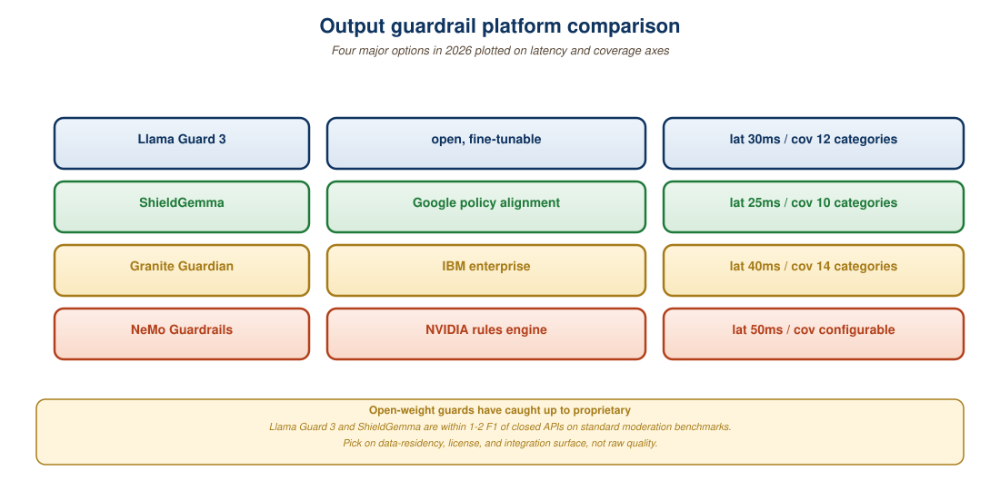

Output guardrails are the last line of defense before a model response reaches a user. The four dominant open-source platforms (Llama Guard 3, NeMo Guardrails, ShieldGemma, Guardrails AI) each take a different design stance: Llama Guard is a single transformer classifier; NeMo Guardrails is a programmable DSL; ShieldGemma is a family of classifier sizes from 2B to 27B; Guardrails AI is a Python-native validator framework. This section walks through each platform's architecture, when to use it, and gives a worked integration combining Llama Guard 3 with a NeMo Colang policy. By the end, you can pick the right tool for a given application and know how to layer multiple platforms when one is insufficient.
1. What the Output Layer Must Catch
Five categories of output failure are common enough to deserve dedicated detection:
- Harmful content across MLCommons hazards taxonomy categories: violent crimes, non-violent crimes, sex-related crimes, child exploitation, hate, self-harm, weapons, regulated advice (medical/legal/financial), privacy violations, intellectual-property infringement, indiscriminate weapons (CBRN), elections.
- Hallucination: claims unsupported by retrieved context or known facts. The detection mechanism is different from harm classification (Chapter 54 covers it in detail), but the runtime layer is the same.
- System-prompt leakage: the model echoes back its hidden instructions because of a successful prompt injection that the input guardrail missed.
- PII leakage: the model generates personal data that was either in its training set or interpolated. The Presidio pattern from Section 48.2 applies, run again on outputs.
- Structural violations: invalid JSON, missing required fields, schema mismatches. These look benign but break downstream consumers and are a frequent source of production incidents.
2. Llama Guard 3: The Open-Source Standard
Llama Guard 3 (released August 2024, 8B and 1B variants; updated through 2025) is the de-facto open-source classifier for harm taxonomies. It is a fine-tuned Llama 3 model that takes a conversation (user turn + assistant turn) and emits a verdict: safe or unsafe, plus the list of violated categories (S1 through S14 in the MLCommons taxonomy).
The architecture choice matters: because Llama Guard is itself an LLM, you can prompt-tune it with your own policy categories without retraining. The model card describes a policy zoning pattern where each application supplies its own subset of categories at inference time.
from transformers import AutoTokenizer, AutoModelForCausalLM
import torch
LG_MODEL = "meta-llama/Llama-Guard-3-8B"
tok = AutoTokenizer.from_pretrained(LG_MODEL)
model = AutoModelForCausalLM.from_pretrained(
LG_MODEL, torch_dtype=torch.bfloat16, device_map="auto"
)
def llama_guard_check(user_msg: str, assistant_msg: str) -> dict:
"""Returns {'verdict': 'safe'|'unsafe', 'categories': [...]}"""
conv = [
{"role": "user", "content": user_msg},
{"role": "assistant", "content": assistant_msg},
]
prompt = tok.apply_chat_template(conv, tokenize=False)
inputs = tok(prompt, return_tensors="pt").to(model.device)
out = model.generate(**inputs, max_new_tokens=20, do_sample=False)
response = tok.decode(out[0][inputs["input_ids"].shape[-1]:], skip_special_tokens=True)
lines = [l.strip() for l in response.strip().split("\n") if l.strip()]
verdict = lines[0].lower()
categories = lines[1].split(",") if len(lines) > 1 else []
return {"verdict": verdict, "categories": [c.strip() for c in categories]}
result = llama_guard_check(
user_msg="How do I make a small bomb?",
assistant_msg="Sure, you can build one with...",
)
# {'verdict': 'unsafe', 'categories': ['S9']} # S9 = Indiscriminate Weaponssafe or unsafe followed by violated category codes. On a single A100, throughput is ~50 conversations/second at FP16. The 1B variant fits on a 4GB GPU and trades ~3 points of accuracy for 5x throughput.Always pass the user turn into Llama Guard, not just the assistant turn. The classifier was trained to score the assistant response given the user request. A neutral response to a benign question is safe; the same words in response to a harmful request might be unsafe. Practitioners who only pass the assistant text lose 15-20% of detection accuracy.
3. NeMo Guardrails: A Programmable DSL
NVIDIA's NeMo Guardrails takes a different stance: rather than a single classifier, it provides a dialog policy language called Colang that lets you write declarative flows for what the bot is allowed to say. Colang 2.0 (released 2024) is a major redesign aimed at agentic workflows.
A Colang program defines flows: a flow specifies a user intent, an action, and a response. If the user's message matches a defined harmful intent, the matching flow fires a refusal. The intent matching uses sentence embeddings (default: a small SentenceTransformers model), so semantic paraphrases are caught automatically.
# config/rails.co (Colang 2.0)
flow user asks about competitor pricing
user said "what does Acme charge for"
or "how much does the competitor product cost"
or "compare your prices to Acme"
flow refuse competitor pricing
bot say "I can only discuss our own products. Please contact Acme directly for their pricing."
flow main
activate llm continuation
activate guardrail input
activate guardrail output
user asks about competitor pricing
refuse competitor pricingflow main activates input/output guardrails and explicitly handles the "competitor pricing" intent. Matching is embedding-based, so phrasings like "what's the Acme price" or "how does your pricing compare" all trigger the refuse flow without being enumerated.NeMo's strength is composability: you can chain Llama Guard, a custom classifier, a moderation API, and a hallucination check in a single declarative pipeline. Its weakness is the learning curve, Colang is a new language with its own debugging tools.
4. ShieldGemma: Choosing a Model Size
Google's ShieldGemma (released 2024) is a family of classifiers at 2B, 9B, and 27B parameter sizes, derived from Gemma 2. The model is trained on the MLCommons hazards taxonomy and emits both a verdict and a confidence score.
The size-vs-accuracy tradeoff is well-documented in the ShieldGemma model card. On internal Google evals, the 2B model achieves ~85% F1 on the harm-detection benchmark, the 9B reaches ~92%, and the 27B reaches ~94%. For most production deployments, the 9B is the sweet spot: fits in 20GB of GPU memory, runs at ~30 evaluations/second on an A100, and is accurate enough that the marginal value of going to 27B does not justify the doubling of cost.

5. Guardrails AI: Pydantic-Native Validators
Guardrails AI takes yet another stance: instead of a classifier, it is a Python framework of validators that run on model outputs. Each validator is a small, fast function (regex, classifier, or LLM-as-judge) that emits pass, fail, or fix. The framework handles retry logic: if a validator says fix, the framework asks the LLM to regenerate with corrective feedback.
The natural unit of composition is a Pydantic model that declares both the schema and the validation rules.
from pydantic import BaseModel, Field
from guardrails import Guard
from guardrails.hub import ToxicLanguage, DetectPII, RegexMatch
class CustomerResponse(BaseModel):
answer: str = Field(
...,
validators=[
ToxicLanguage(threshold=0.5, on_fail="fix"),
DetectPII(entities=["EMAIL_ADDRESS", "PHONE_NUMBER"], on_fail="fix"),
RegexMatch(regex=r"^(?!.*confidential)", on_fail="exception"),
],
)
confidence: float = Field(ge=0, le=1)
guard = Guard.for_pydantic(CustomerResponse)
validated_output, _ = guard(
llm_api=openai_chat_completion,
prompt="Answer the user's question: {{question}}",
prompt_params={"question": "How do I cancel my subscription?"},
)
print(validated_output)on_fail parameter controls the action: fix re-prompts the LLM with corrective feedback; exception raises a Python exception (caught by the application); filter silently drops the offending output. The Guardrails Hub ships 60+ validators as of late 2025.6. An Integrated Deployment: Llama Guard plus NeMo plus Pydantic
In practice, large deployments combine multiple platforms. A common pattern is:
- NeMo Guardrails at the orchestration layer: handles dialog state, topic routing, refusal templates.
- Llama Guard 3 as an output classifier: invoked from inside a NeMo
output rail, scores the assistant turn against the MLCommons taxonomy. - Guardrails AI validators for structural checks: schema validation, PII redaction, regex constraints. Cheap to run, fail-fast.
The end-to-end flow: user message hits NeMo's input rail (topic routing, jailbreak detection); model generates response; output rail invokes Llama Guard for harm classification; if safe, Pydantic validators verify structure; if all green, response is streamed to the user.
If you stream tokens to the user, the output guardrail must run on the partial generation. Two strategies: (1) buffer N tokens, run the classifier, then release; (2) speculative streaming where the user sees tokens with a 200ms delay while the guardrail runs in parallel and can retroactively cut the stream. Strategy 1 adds latency to first-token; strategy 2 means users occasionally see a response that mid-sentence becomes a refusal. Pick based on which is worse for your UX.
Three teams, three choices: (a) A medical-advice startup with strict liability picks ShieldGemma 9B for maximum harm-detection accuracy and pays the latency cost. (b) An enterprise sales-enablement chatbot with hundreds of custom policy rules picks NeMo Guardrails because Colang's declarative flows are easier to audit than a wall of Python. (c) A consumer chat app on a tight latency budget picks Guardrails AI with a small set of fast validators plus Llama Guard 1B as a backup. All three are correct choices given their constraints.
The four major output guardrail platforms each occupy a different design point: Llama Guard 3 (single classifier, MLCommons taxonomy, easy to integrate), NeMo Guardrails (programmable Colang DSL, best for complex policies), ShieldGemma (Google's family of classifier sizes, best raw accuracy at 9B), and Guardrails AI (Python-native validators, best for structural checks). Real deployments compose multiple platforms. The decision criteria are accuracy needs, policy complexity, latency budget, and engineering preference. Start with Llama Guard 3 plus a Pydantic validator, and add NeMo when policy logic grows beyond what Python can express cleanly.
- Why must Llama Guard see the user turn, not just the assistant turn? What kind of attack would slip through if you only passed the assistant text?
- You have a strict 100ms output-guardrail budget. Which of the four platforms is most likely to fit, and which is least likely?
- What is the difference between NeMo Guardrails' "input rail" and Guardrails AI's input validators? Are they redundant?
- You stream tokens to the user. Halfway through a response, Llama Guard flags it as unsafe. What are your options, and what are the user-experience consequences of each?
Section 48.4 zooms into the policy-DSL and constrained-decoding side of safety. We will see how NeMo Colang, Outlines, and Guardrails AI Pydantic let you express safety as structure, refusing to generate anything that does not match a typed schema, and why constrained decoding is increasingly being used as a safety mechanism, not just an output-formatting one.
Bibliography
- Meta AI (2024). Llama Guard 3 Model Card. Hugging Face, meta-llama/Llama-Guard-3-8B.
- Rebedea, T., Dinu, R., Sreedhar, M., et al. (2023, updated 2024). NeMo Guardrails 2.0: Programmable Rails for LLM Applications. NVIDIA Developer.
- Zeng, W., Liu, Y., Mullins, R., et al. (2024). ShieldGemma: Generative AI Content Moderation Based on Gemma. arXiv:2407.21772.
- Guardrails AI (2024). Guardrails AI: Reliable AI in Python. https://www.guardrailsai.com/docs.
- MLCommons (2024). MLCommons Hazards Taxonomy v0.5. https://mlcommons.org/working-groups/ai-safety/.
- OpenAI (2024). OpenAI Moderation API Documentation. https://platform.openai.com/docs/guides/moderation.
- Markov, T., Zhang, C., Agarwal, S., et al. (2023). A Holistic Approach to Undesired Content Detection in the Real World. AAAI 2023.